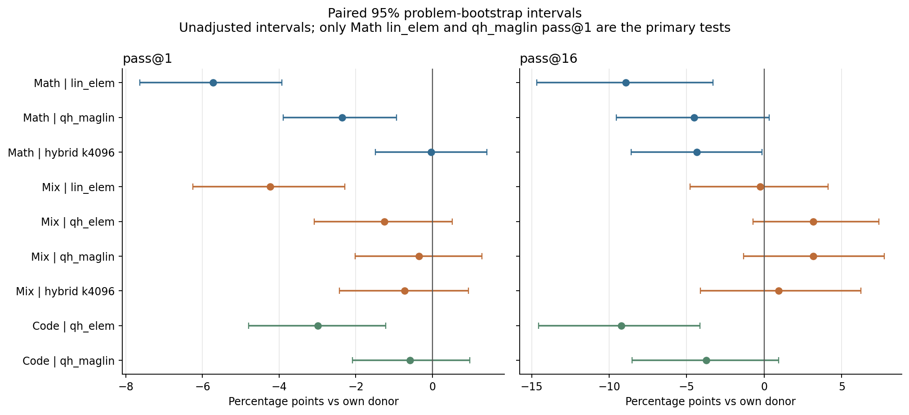
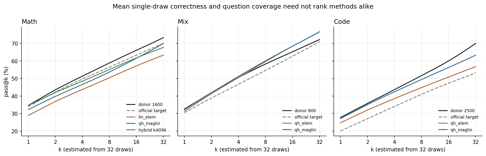
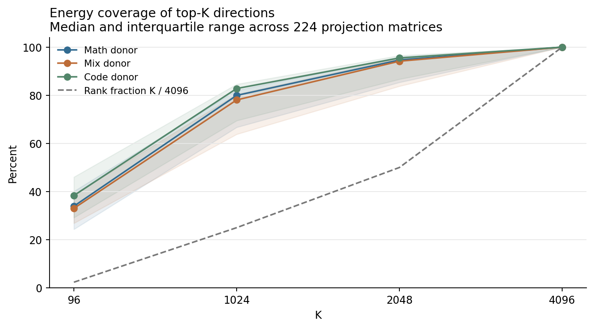
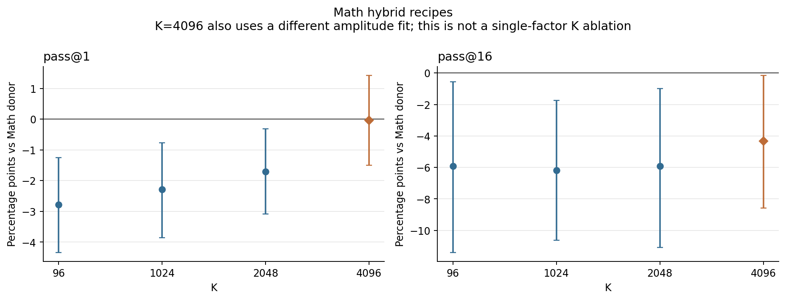
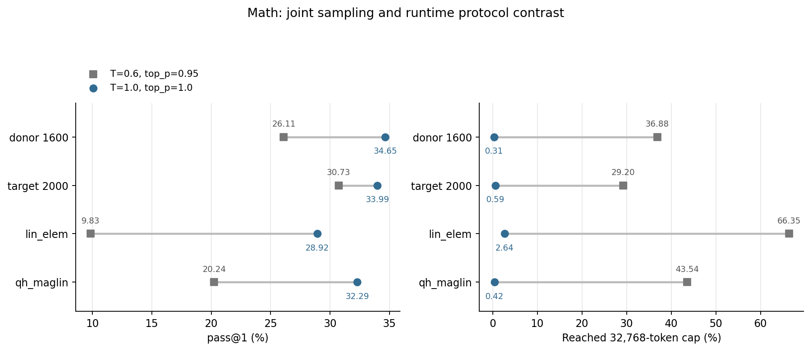
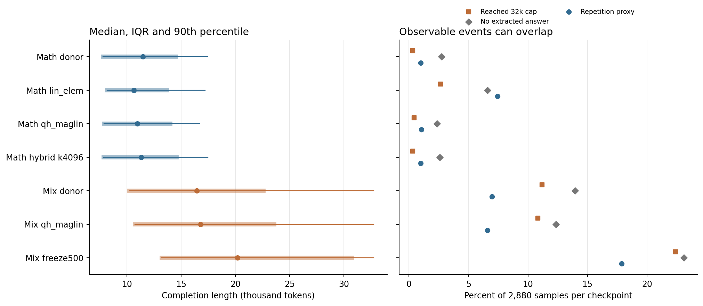
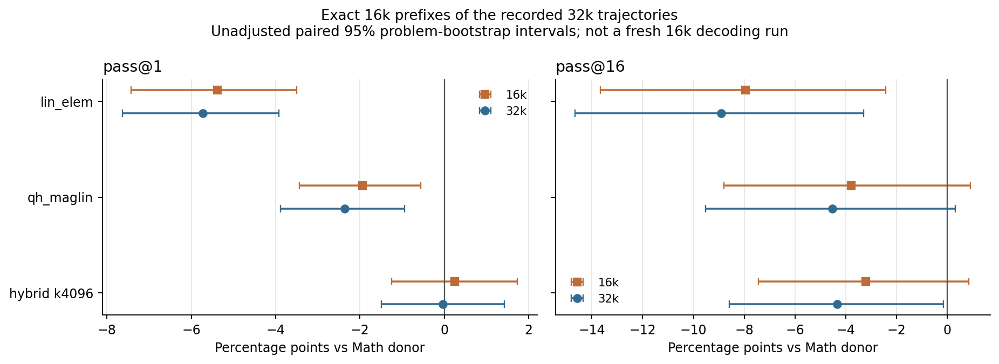
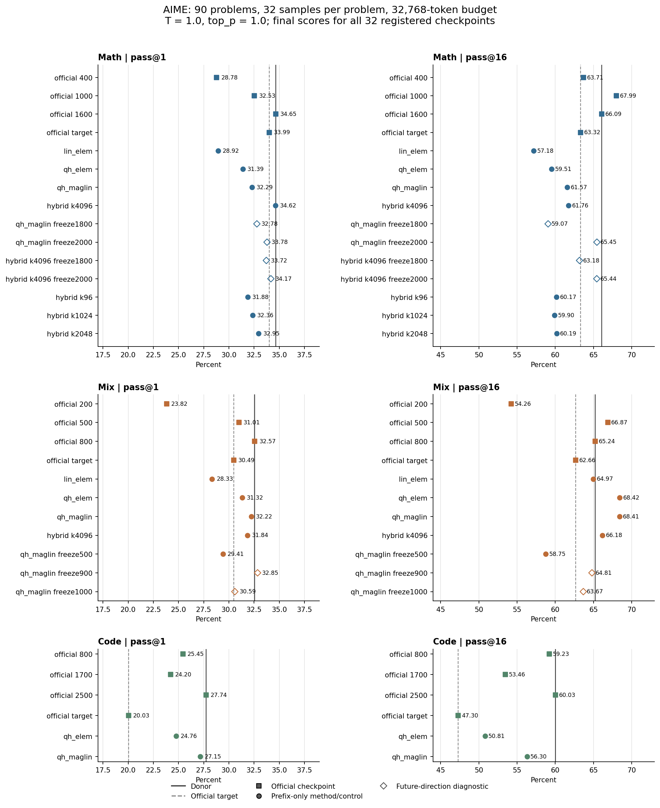

目录
OLMo p80 外推的 AIME 表现与生成轨迹
本报告分析 OLMo-3-7B RL-Zero 的 Math、Mix、Code 三条训练轨迹，比较前缀外推、前缀末端的真实 checkpoint（donor）和完整训练目标 checkpoint（target）在 AIME 上的表现。评测包含 32 个 checkpoint、90 道题，每题生成 32 个样本，共 92,160 条完整输出。本文的“轨迹”指可观测的生成 token 与文本序列；权重构造另行说明，未在这些输出上测量隐状态几何。
在 T=1.0、top_p=1.0、32,768-token 预算下，事前分析计划指定的两个 Math 主比较均显示功能下降。lin_elem 的 pass@1 比 step1600 donor 低 5.73 个百分点，95% 题级配对 bootstrap 区间为 [−7.64, −3.92]；qh_maglin 低 2.36 个百分点，区间为 [−3.89, −0.94]。两项单侧检验经 Holm 校正仍低于 0.05。主比较与推断
这两个主结果不概括所有外推配方。Math hybrid k4096 的 pass@1 为 34.62%，与 donor 的 34.65% 接近，差值区间包含零；其 pass@16 为 61.76%，低于 donor 的 66.09%。Mix qh_maglin 的 pass@1 为 32.22%，pass@16 为 68.41%，相对 donor 的差值分别为 −0.35 和 +3.17 个百分点，两项差值区间都包含零。均值接近并不证明等价，较高的点估计也不单独确立优势。32 个 checkpoint 指标 · 配对差值
1 实验问题与统计单位
实验检验的是利用训练轨迹前缀构造权重后，模型能否保留或改善任务功能，以及这一判断对采样协议、生成预算和配方选择是否敏感。事前分析计划的主问题固定为 Math p80 的 lin_elem − step1600 donor 与 qh_maglin − step1600 donor，主指标为完整 32,768-token 预算下的 pass@1。pass@16、其他 checkpoint、方向替换、预算前缀和协议比较用于补充解释。实验与分析定义
题目集合与 AI-MO 的 aimo-validation-aime 按题目原文和标准答案逐项匹配，覆盖 AIME 2022、2023、2024 各 30 道题。本地命名为 test 的 20 条与 train 的 70 条文件合并后，恰好覆盖上游 90 条公开题目且无交集。文件名不构成这些题目未被模型预训练或强化学习使用过的证据；本文结论限定于这组公开题目。题目来源核对 · AI-MO 数据集说明
| 赛道 | donor | target | checkpoint 数 | 每个 checkpoint 的样本数 |
|---|---|---|---|---|
| Math | step1600 | step2000 | 15 | 2,880 |
| Mix | step800 | step1000 | 11 | 2,880 |
| Code | step2500 | step3000 | 6 | 2,880 |
donor 是外推所使用前缀的末端真实权重。构造累计更新时使用的 pre-RL 基座与 donor 是不同对象。target 则是沿同一训练轨迹得到的完整目标权重。对照始终在同一赛道和同一组题目内配对；不能用优于某个 target 代替相对自身 donor 的收益。模型与对照映射
每题的 32 个样本中若有 c 个正确，则 pass@1 为 c/32，pass@k 采用无偏组合估计 1−C(32−c,k)/C(32,k)，再对 90 道题取均值。当 32−c<k 时，该题的 pass@k 为 1。pass@16 表示从该采样分布抽取 16 次时至少答对一次的估计，既不同于平均单次正确率，也不同于多数投票正确率。pass@32 在这批记录中等于至少有一条正确输出的题目占比。
置信区间以题目为重采样单位，配对保留不同 checkpoint 在同一道题上的结果，进行 10,000 次 percentile bootstrap，随机种子为 0。不能把 92,160 条输出视为互相独立的 92,160 道题。区间条件于这批已记录的解码样本，不覆盖重新选择解码种子带来的全部不确定性。两项主比较使用单侧配对 t 检验并做 Holm 校正；配对 t 是检验统计量的具体实现，分析计划固定了比较方向和校正要求。事前分析计划是本地文件，未作外部不可变时间戳登记，本文不主张正式注册研究。其他比较的区间均未做多重比较校正，作为次级或探索性结果解释。统计实现与输出
2 两个 Math 主方法均低于 donor
| Math 条件 | pass@1 | pass@16 | pass@1 相对 donor 差值 | 95% 配对区间 | 主比较 Holm p |
|---|---|---|---|---|---|
| donor step1600 | 34.65% | 66.09% | 0.00 pp | 参照 | 不适用 |
| target step2000 | 33.99% | 63.32% | −0.66 pp | [−2.15, +0.83] | 不适用 |
| lin_elem | 28.92% | 57.18% | −5.73 pp | [−7.64, −3.92] | 5.56×10⁻⁸ |
| qh_maglin | 32.29% | 61.57% | −2.36 pp | [−3.89, −0.94] | 0.0012 |
| hybrid k4096 | 34.62% | 61.76% | −0.03 pp | [−1.49, +1.42] | 不适用 |
lin_elem 和 qh_maglin 的差值区间都完整位于零以下。hybrid k4096 的 pass@1 未检出差异，但没有预先设定等价界限，不能称为与 donor 等价。其 pass@16 相对 donor 为 −4.34 pp，未校正区间 [−8.59, −0.15]；这一结果提示单次正确率相近时，多次采样覆盖仍可能不同。题级配对结果

图 1。每条横线为 90 道题上的配对 bootstrap 95% 区间，单位为百分点。只有 Math 的 lin_elem、qh_maglin 两个 pass@1 比较属于主检验家族；图内其余区间未作多重比较校正。
官方 target 在这组 AIME 题上也未统一优于 donor。Math、Mix、Code 的 target−donor pass@1 分别为 −0.66、−2.08、−7.71 pp，区间分别为 [−2.15,+0.83]、[−3.82,−0.42]、[−10.52,−5.17]。因此，外推方法超过 target 可能与该任务上的官方轨迹波动有关，不能据此计算“恢复了多少训练收益”，更不能换算节省的训练成本。官方 donor 与 target 对比
3 单次正确率与多次采样覆盖反映不同差异
Math hybrid k4096 与 donor 在 pass@1 上接近，但前者在 32 条样本中至少答对过一次的题目为 61/90，donor 为 66/90。逐题配对有 4 道题由零次正确变为至少一次正确，同时有 9 道题发生反向变化。其正确样本数高于、低于、等于 donor 的题目各有 30 道。平均正确样本数近似相同，不能保证这些正确样本分布在相同或更多题目上。
Math lin_elem 的至少一次正确覆盖为 57/90，相对 donor 增加 4 道、失去 13 道；qh_maglin 为 63/90，增加 5 道、失去 8 道。Mix qh_maglin 则为 69/90，donor 为 65/90，增加 7 道、失去 3 道。这里的“增加”和“失去”仅指这批各 32 次抽样的观测，不是题目可解性的永久改变。逐题覆盖对照 · 正确样本数分布

图 2。所有 k 的估计均来自同一批每题 32 个样本，并非对每个 k 独立重新生成。曲线用于展示采样次数如何改变方法排序；它本身不衡量推理语义多样性，也不是独立的显著性检验。曲线数据
4 参数配方需要区分四种比例
p80 按有效 checkpoint 数量取有序序列的前 round(0.8×T) 个点，不是把两份权重按 80∶20 混合。Math 用 step100 至 step1600、间隔 100 的 16 个点；Mix 用 step50 至 step800、间隔 50 的 16 个点；Code 用 step400 至 step2500、间隔 100 的 22 个点。累计更新定义为 ΔW_t = W_t − W_base，其中基座为 Olmo-3-1025-7B。逐模型配方登记
外推模型共有 7,298,011,136 个参数、355 个 tensor。七类投影矩阵分别采用各方法的公式，输出头统一采用逐元素线性拟合，其余 tensor 复制 donor。因此“方法作用于多少参数”与“K 控制多少方向”必须分别给出。
| 构造部分 | tensor 数 | 参数数 | 占全模型参数比例 | 处理方式 |
|---|---|---|---|---|
| 32 层 × 7 类投影 | 224 | 6,476,005,376 | 88.7366% | 各方法的投影构造 |
| lm_head | 1 | 410,738,688 | 5.6281% | 逐元素线性 OLS |
| 其他 tensor | 130 | 411,267,072 | 5.6353% | 复制 donor |
公式生成部分合计 94.3647%，这个比例描述权重构造覆盖，不表示训练了相同比例的独立参数。参数与张量清单
4.1 方向、幅度和剩余块的构造
记工作矩阵为 A_t。q、k、v、o、gate、up 使用 A_t=ΔW_t；down 使用转置后的 ΔW_t。方向步 d 的薄 SVD 给出 A_d = U_d S_d V_dᵀ = Q_d H_d，其中 Q_d=U_d V_dᵀ，H_d=V_d S_d V_dᵀ。默认 d 为 donor。输出将预测的累计更新加回基座。
| 方法 | 前缀拟合量 | 方向和重组 |
|---|---|---|
| lin_elem | W_t 的每个元素对训练步做线性 OLS | 直接在 target step 求值 |
| qh_elem | H_t=Q_dᵀ A_t 的每个元素对训练步做线性 OLS | Â=Q_d Ĥ |
| qh_maglin | m_t=‖A_t‖_F 对训练步做线性 OLS | Â=Q_d H_d×m̂/‖H_d‖_F |
| hybrid kK | m_t=‖Q_dᵀA_t‖_F 拟合幅度；R_t=H_t−P_KH_tP_K 逐元素 OLS | Ĥ=(m̂/‖H_d‖_F)P_KH_dP_K+R̂，Â=Q_dĤ |
P_K 为 H_d 前 K 个特征方向的投影。hybrid 保留 top-K 块的方向和相对谱形，仅用一个标量缩放；其余块仍用逐元素拟合。K=4096 时 P_K=I，剩余块为零。公式与实现对应
q、k、v、o 的工作矩阵为 4096×4096；gate、up 和转置后的 down 为 11008×4096。因此各投影的 H 都是 4096×4096。对于方阵，Q_d 满秩正交，qh_elem 的 Q_d 在无约束逐元素 OLS 中代数消去；矩形投影只保留 Q_d 所张成的列空间。这个结构限定了能从 lin_elem 与 qh_elem 差异中推断什么。
4.2 K 的方向比例不等于能量份额
K/4096 表示方向秩比例，K²/4096² 表示从剩余块 OLS 中移除的块坐标比例。实际能量份额为方向步更新的 Σ_{i≤K}σ_i² / Σ_{i≤4096}σ_i²。以下能量值是各赛道 donor 上 224 个投影矩阵的中位数，不是全模型按参数数加权的能量占比。
| K | 方向秩比例 | 块坐标比例 | Math 能量中位数 | Mix 能量中位数 | Code 能量中位数 |
|---|---|---|---|---|---|
| 96 | 2.3438% | 0.0549% | 33.9331% | 33.0301% | 38.3528% |
| 1024 | 25.0000% | 6.2500% | 79.9408% | 78.0547% | 82.7990% |
| 2048 | 50.0000% | 25.0000% | 94.6514% | 94.1544% | 95.5034% |
| 4096 | 100.0000% | 100.0000% | 100.0000% | 100.0000% | 100.0000% |
K=96 的方向秩比例仅 2.3438%，但 Math 的中位能量份额已达 33.9331%；K=2048 的方向秩比例为 50%，中位能量份额达 94.6514%。这些分母不能互换使用。逐投影能量 · 聚合分布

图 3。实线表示 donor 更新在 top-K 方向内的能量份额中位数，阴影为 224 个投影矩阵的四分位区间；虚线为 K/4096。图中能量份额与功能变化之间未建立因果关系。
4.3 四档 K 不是完整的单因素消融
K=96、1024、2048 使用对 step 的线性幅度拟合，K=4096 则使用对 √step 的线性幅度拟合。Math 前三档的 pass@1 为 31.88%、32.36%、32.95%，点估计递增；pass@16 为 60.17%、59.90%、60.19%，没有相同的单调趋势。K4096 的 pass@1 为 34.62%、pass@16 为 61.76%，但不能把其增量全部归因于 K。配方与分数

图 4。差值均相对 Math donor，误差线为未校正的题级配对 95% 区间。K4096 用不同标记表示其幅度拟合模式也不同。
qh_maglin 与 hybrid k4096 还存在幅度定义差别：前者使用 ‖A_t‖_F，后者使用 ‖Q_dᵀA_t‖_F。两者在方阵上相等，在矩形投影上一般不等。Math 的 hybrid k4096 − qh_maglin pass@1 为 +2.33 pp，区间 [+1.04,+3.68]，pass@16 为 +0.19 pp，区间 [−4.62,+5.11]；这些差异不能单独识别 √step 幅度函数的作用。Mix 同一配方比较的 pass@1 为 −0.38 pp，区间 [−1.98,+1.28]，也不支持跨赛道统一获益。配方差值
4.4 使用未来方向的条件只作诊断
Math 的 freeze1800、freeze2000，以及 Mix 的 freeze900、freeze1000 使用了 donor 之后的方向。Mix freeze500 位于前缀内部，属于可获得方向的替换诊断。对于 hybrid 的矩形投影，使用未来 Q_d 还会影响前缀幅度序列 ‖Q_dᵀA_t‖_F，因此未来信息不只进入最终重组方向。方向身份
Math qh_maglin 使用 target 方向后，pass@1 点估计增加 1.49 pp，pass@16 增加 3.89 pp；hybrid k4096 使用同一 target 方向后，pass@1 减少 0.45 pp、pass@16 增加 3.68 pp。配方与方向的差分之差区间包含零，不能据此确立稳定交互效应。Mix 使用更晚方向同样没有统一改善两个指标。方向与配方对照
配方身份由生成代码、生成脚本或日志、冻结登记表及模型指纹共同支持。T=1.0 的模型指纹包括小文件 SHA256、各权重 shard 的大小及头部、中部、尾部抽样窗口哈希，并非完整 shard 的 SHA256。checkpoint 内的 config 是 donor 配置的副本，不包含独立的配方记录；本报告未逐元素重建全部模型权重。因此，配方映射及抽样指纹核对的证据范围，与所有权重字节的完整构造证明有所区别。配方证据范围
5 主比较的方向保留 但差距大小依赖协议
在相同题目、每题 32 个样本及 32,768-token 预算下，T=0.6、top_p=0.95 与 T=1.0、top_p=1.0 的结果用同一个冻结整数答案抽取器评分。Math lin_elem、qh_maglin 相对 donor 的 pass@1 差距，在 T=1.0 协议下仍低于零，但比 T=0.6 协议明显缩小。
| Math pass@1 比较 | T=0.6 相对 donor | T=1.0 相对 donor | 两协议差值的差 | 95% 题级配对区间 |
|---|---|---|---|---|
| lin_elem | −16.28 pp | −5.73 pp | +10.56 pp | [+5.97,+15.31] |
| qh_maglin | −5.87 pp | −2.36 pp | +3.51 pp | [+0.80,+6.25] |
| official target | +4.62 pp | −0.66 pp | −5.28 pp | [−7.67,−2.99] |
表中最后两列计算 (T1 方法−T1 donor) − (T0.6 方法−T0.6 donor)，保留同一道题的配对。两个主方法的相对差距缩小量的未校正区间均高于零；官方 target−donor 的点估计则改变符号。因此，方法低于 donor 的判断在这两个协议中保留，但差距大小和 target 排序不能当作与协议无关的常数。协议差分之差
| Math 条件 | T=0.6 pass@1 | T=1.0 pass@1 | T=0.6 撞 32k 上限率 | T=1.0 撞 32k 上限率 | T=0.6 平均 token | T=1.0 平均 token |
|---|---|---|---|---|---|---|
| donor step1600 | 26.11% | 34.65% | 36.88% | 0.31% | 18,543 | 11,391 |
| target step2000 | 30.73% | 33.99% | 29.20% | 0.59% | 16,601 | 11,333 |
| lin_elem | 9.83% | 28.92% | 66.35% | 2.64% | 25,150 | 11,568 |
| qh_maglin | 20.24% | 32.29% | 43.54% | 0.42% | 20,077 | 11,118 |
分数变化与输出长度、撞生成上限比例同时改变。两个协议还包含运行时、后端版本、数值路径和重新抽样的差异，temperature 与 top_p 也共同变化。因此只能报告协议束对比，不能识别纯温度效应，不能把分数改善全部归因于避免截断。统一评分协议表

图 5。左图为 pass@1，右图为达到 32,768-token 生成上限的比例。两协议均使用 90 道题、每题 32 次采样。这里的生成上限与持久化文本的存储上限是不同概念。
Math 15 个、Mix 11 个条件的 pass@1 点估计在 T=1.0 协议下全部较高，变化中位数分别为 +8.72、+13.06 pp。Code 五个无已知文本存储截断的条件中，变化中位数为 −1.28 pp，范围 −9.90 至 +5.76 pp。赛道之间的差异不支持统一的采样收益结论。这些矩阵级结果属于探索性汇总，没有对所有比较做多重校正。按赛道协议汇总
5.1 跨协议比较的证据边界
T=1.0 的 92,160 条输出全部保存 token IDs，全文评分重放与记录的答案及正确性完全一致。T=0.6 的 92,160 条持久化文本重放中，一条抽取答案发生变化，但正确性变化为零。Math 两个主方法及其 donor、target 均无重放分数变化，也未检测到已标记的存储截断。评分与样本核对
T=0.6 记录没有 prompt token IDs 和模型字节指纹，只能确认题目、标准答案、模板族、checkpoint 标签和相对路径一致；无法从这些记录独立证明 token 级 prompt 和模型字节完全相同。Math 模板族为 dapo，Mix、Code 为 thinking。T=0.6 的 Math/Mix 记录没有 sample_chars 字段，未检测到截断不等于排除未标记的文本存储限制。这些条件限制跨协议差异的因果解释。
T=0.6 的 Mix qh_elem 在 5 道题上有两组尝试。分析视图按原 evaluator 明确的“同题最后一条记录”语义选择 result，并以相同 run_id 绑定完整的 32 个 sample_idx；全部分数、长度和撞上限聚合与保存的 final 相符。两组尝试的正确样本数相同，长度和撞上限数不同。该确定性视图没有按分数择优，且不影响两个 Math 主比较。重复记录的选择规则与验证
T=0.6 Code qh_maglin 的 aime-059/sample21 存在一条已确认的文本存储截断，缺失尾部不可恢复。该 cell 不纳入完整文本比较的精确置信区间。允许这唯一未知样本由错变对时，其 T=0.6 pass@1 位于 [26.5972%,26.6319%]，T=1.0 相对它的差值位于 [+0.5208,+0.5556] pp。完整重放结果的全局验证标志因此为 false；它不否定 T=1.0 全量数据的完整性，也不影响无该异常的 Math 主比较。存储截断病例及保守界
6 生成轨迹显示两种不同的损失形态
Math lin_elem 的平均长度只比 donor 多约 177 tokens，但尾部行为明显不同：撞 32k 上限率为 2.64%，donor 为 0.31%；文本重复代理命中率为 7.43%，donor 为 0.97%；可抽取答案率为 93.40%，donor 为 97.26%。其长度第 99 百分位达到 32,768 tokens，donor 的对应值约为 24,001 tokens。平均长度接近不能排除一小部分输出出现很长的重复尾部。
qh_maglin 的行为不同：平均长度约 11,118 tokens，撞上限率 0.42%，重复代理命中率 1.04%，可抽取率 97.64%。这些指标与 donor 更接近，但 pass@1 仍低 2.36 pp。因此，仅凭撞上限或格式缺失无法概括两个方法的共同分数下降。轨迹汇总
| 条件 | 平均 token | 撞 32k 上限率 | 可抽取答案率 | 重复代理命中率 | stop 条件正确率 |
|---|---|---|---|---|---|
| Math donor | 11,391 | 0.31% | 97.26% | 0.97% | 34.76% |
| Math lin_elem | 11,568 | 2.64% | 93.40% | 7.43% | 29.60% |
| Math qh_maglin | 11,118 | 0.42% | 97.64% | 1.04% | 32.43% |
| Math hybrid k4096 | 11,432 | 0.31% | 97.40% | 0.97% | 34.73% |
| Mix donor | 16,967 | 11.18% | 86.04% | 6.98% | 36.51% |
| Mix qh_maglin | 17,544 | 10.83% | 87.64% | 6.60% | 35.98% |
| Mix qh_maglin freeze500 | 20,567 | 22.40% | 76.91% | 17.88% | 37.32% |
每行完整分母为 2,880 条；stop 条件正确率的分母仅包含 finish_reason=stop 的样本。Math donor、lin_elem、qh_maglin 的该分母分别为 2,871、2,804、2,868 条。三者在可抽取答案子集中的正确率分别为 35.63%、30.97%、33.07%，对应分母为 2,801、2,690、2,812 条。条件筛选会改变样本组成，因此这些数值不用于分解“格式导致多少损失”或识别中介因果。逐样本特征
重复代理的计算规则为：对全文做小写与空白归一化，取最后 16,384 个字符，每隔 16 个字符抽取一个 64 字符窗口；若已出现过的窗口占比达到 10%，则记为命中。它能捕捉机械重复，也可能把正常重复书写的公式计入。32、64、128 字符窗口与 5%、10%、20% 阈值的九种组合均有输出，不能把某一个阈值当成人工语义标注。重复定义与敏感性

图 6。左图展示 token 长度中位数、四分位区间及第 90 百分位；右图分别展示撞上限、不可抽取、重复代理三种比例。这三种事件可以重叠，不能相加得到“失败率”。
在 Math 的同题差值上，lin_elem−donor 的正确率差与长度差、重复比例差呈负相关，Pearson r 分别为 −0.5297、−0.4468；qh_maglin−donor 的对应值为 −0.1433、−0.0741。它们是 90 道题上的描述性关联，没有控制所有难度和生成因素，也不提供重复导致错误的因果证明。题级轨迹差值
6.1 可复查的文本实例
实例按明确规则选取：方法相对 donor 的最大题级收益或损失、核心样本中的最大重复值，以及出现显式答案变化并最终正确的最长样本；相同条件下用 UID 和 sample_idx 排序打破并列。它们用于展示可观察行为，不代表随机抽取的典型样本。不同模型使用相同 sample_idx 仅为展示对齐，不能视为控制了全部随机性的样本级实验配对。选择规则与原文位置
| 样本标识 | 实测输出 | 可支持的描述 |
|---|---|---|
| aime-042 / sample2 | Math lin_elem 生成 32,768 tokens，尾部持续出现 No:，无可抽取答案；同题同索引 qh_maglin 用 18,427 tokens 正常结束并给出标准答案 585 |
该实例存在机械重复、撞上限与无答案共现；不能据此认定全部错误都属于这种类型 |
| aime-017 / sample5 | donor 用 9,764 tokens 给出 104，qh_maglin 用 11,604 tokens 给出 83；两条均以 stop 结束，标准答案为 104 | 未撞上限、能抽取答案的输出也会发生正确性差异 |
| aime-079 / sample26 | hybrid k4096 用 22,532 tokens 结束，最先的显式 boxed 答案为 129，最终 boxed 答案为正确的 73 | 更长的生成也可能伴随答案由错变对；出现答案变化不等于已识别内部自我纠错机制 |
最后一个实例的尾部原文包含 3x = 219、x = 219/3 = 73 和 \boxed{73}，直接支持所列的最终答案。重复实例的尾部原文由多次 No: 构成。原文片段、字符偏移、文本 SHA 和原始 token 序列 SHA 均保存在实例文件中。
6.2 文本互异不等于语义多样性或独立抽样
2,880 个“checkpoint×题目”组中，有 5 组存在完全相同的 completion，合计 6 个额外重复样本，占 92,160 条的 0.0065%，全部位于 Mix lin_elem。Math 两个主方法及 donor 的每题 32 条输出在文本和 token 序列上均互异。这个结果可排查明显的复制流现象，但不能证明各次生成统计独立，也不能证明它们采用了不同的解题策略。精确重复统计
7 精确 16k 前缀保留两个主方法的劣势
预算分析固定同一条 32k-cap 生成轨迹，对超过 16,384 tokens 的输出取原始 token IDs 的前 16,384 个，按相同 tokenizer 和生成引擎的文本解码规则还原，再使用相同答案抽取器评分。短于或等于 16k 的轨迹复用已经核验一致的完整文本。这个分析没有重新进行 16k 解码，回答的是已记录轨迹的答案在前缀中是否可见，不能替代一次独立 16k 推理实验。
| Math 条件 | 16k 前缀 pass@1 | 32k 完整 pass@1 | 16k 前缀 pass@16 | 32k 完整 pass@16 | 从前缀到完整输出由错变对／由对变错 |
|---|---|---|---|---|---|
| donor step1600 | 33.89% | 34.65% | 64.22% | 66.09% | 22／0 |
| target step2000 | 33.61% | 33.99% | 62.68% | 63.32% | 11／0 |
| lin_elem | 28.51% | 28.92% | 56.28% | 57.18% | 12／0 |
| qh_maglin | 31.94% | 32.29% | 60.43% | 61.57% | 10／0 |
| hybrid k4096 | 34.13% | 34.62% | 61.00% | 61.76% | 14／0 |
每行仍保留 2,880 条轨迹，不能丢弃 16k 时没有答案的样本。16k 下 lin_elem−donor 的 pass@1 差为 −5.38 pp，区间 [−7.43,−3.51]；qh_maglin−donor 为 −1.94 pp，区间 [−3.44,−0.56]。两者仍低于 donor。hybrid k4096−donor 为 +0.24 pp，区间 [−1.25,+1.74]，继续属于差异不确定。预算指标 · 预算内配对比较

图 7。误差线为未校正的题级配对 95% 区间。16k 结果是完整轨迹的前缀评分，不是另一组解码样本；预算敏感性不替代 32k pass@1 的主比较。
全部 32 个条件的 32k pass@1 点估计都高于同轨迹 16k 前缀。按各赛道登记的 checkpoint 等权汇总，Math 增加 0.52 pp、Mix 增加 3.52 pp、Code 增加 0.35 pp；这些汇总包括各自全部登记条件，只描述本面板，不构成跨模型的统一能力量。
| 赛道 | 轨迹数 | 超过 16k 比例 | 最终撞 32k 上限比例 | 16k 后由错变对 | 由对变错 | 由错变对中最终 stop／length |
|---|---|---|---|---|---|---|
| Math | 43,200 | 13.50% | 0.71% | 229 | 3 | 227／2 |
| Mix | 31,680 | 50.64% | 12.10% | 1,118 | 4 | 1,090／28 |
| Code | 17,280 | 9.80% | 1.18% | 60 | 0 | 60／0 |
多数增益来自在 16k 后继续生成并以 stop 结束的轨迹，而非最终达到 32k 的轨迹。因此，最终 32k 撞限率不能单独代表 16k 至 32k 的预算收益。逐样本答案转移 · 结束类型分层
7.1 仅挽救已撞限错误样本仍不足以填平 Math 主差距
对固定的已观测样本，可以构造一个明确的乐观记分上界：保持 donor 分数和所有未撞限样本不变，把方法中每一条达到 32k 且判错的输出全部改记为正确。它不是实测分数，也不是延长生成后会达到的预测，只用于界定“直接挽救已撞限样本”最多能改变多少分。
| Math 方法 | 实测正确／2,880 | 撞限样本 | 其中判错 | 乐观上界正确／2,880 | 乐观 pass@1 上界 | 仍低于固定 donor |
|---|---|---|---|---|---|---|
| lin_elem | 833 | 76 | 73 | 906 | 31.46% | 3.19 pp |
| qh_maglin | 930 | 12 | 12 | 942 | 32.71% | 1.94 pp |
donor 的实测正确数为 998/2,880。即使采用上述极端上界，两项差距也不能被消除。这只排除“把当前已撞 32k 且错误的样本全部救对即可填平 pass@1 缺口”这一有限说法，不排除改变预算、解码策略或权重后生成分布发生更广泛变化。上界定义与计算
8 数据验证与结论范围
T=1.0 的 32 个完整样本文件与绑定清单的 SHA256 全部一致；90 个题目 ID、每题 32 个 sample_idx、标准答案、token 数、结束类型、逐题正确向量和各 final 聚合全部一致。生成时已校验原生聊天模板 tokenize、渲染文本 tokenize 与引擎记录的 prompt IDs；产物验证绑定了 evaluator、tokenizer 和模板身份，并核对保存的 prompt 长度与哈希，未将其表述为另一次离线重建全部 prompt。
92,126 条完整轨迹直接从 token IDs 解码后与文本逐字相同；另外 34 条在长度边界具有尚未完成的 UTF-8 字节序列，按引擎的延迟输出规则处理后也完全相同。精确 16k 分析对 23,572 条长轨迹重新解码，其中 241 条需要同类边界处理；其余 68,588 条使用核验后的完整文本。没有未解释的 token／文本不一致，冻结 scorer 对 92,160 条输出的答案与正确性重放也无差异。完整验证结果 · 精确前缀方法与计数
主统计还经过独立计算检查。两个均值差的 bootstrap 区间、单侧配对 t 与 Holm 结果一致；保持每个年份各 30 道题的分层 bootstrap 也保留两个负差。作为事后方向敏感性，去掉题级零差后，lin_elem 有 49 题负差、13 题正差，qh_maglin 有 40 题负差、19 题正差；精确符号检验经两项 Holm 校正的 p 分别为 4.82×10⁻⁶ 和 0.0043。这个检验针对非零差中负差是否占多数，与均值差检验的零假设不同，只作方向一致性检查。独立主统计与符号检验 · 年份敏感性
以上验证支持原始输出、冻结评分与报告聚合之间的内部一致性，不代表逐段推导都经过人工数学证明检查。答案抽取器按模板族使用最后一个匹配的 Answer 或 boxed 内容，格式细节会影响可抽取性；出现较早正确答案不保证最终被抽取的答案正确。轨迹的长度、重复、结束方式和答案变化均为可观察指标，不替代隐状态测量或因果干预。
| 待检验说法 | 证据判断 | 范围 |
|---|---|---|
| T=1.0 协议消除了两个 Math 主方法相对 donor 的 pass@1 劣势 | 不支持 | 两个主差值及区间均低于零 |
| 方法与 donor 的差距大小不依赖协议 | 不支持 | 两个协议差分之差均为正，区间不含零 |
| 仅挽救已撞 32k 的错误输出即可填平当前 pass@1 缺口 | 不支持 | 固定样本的乐观记分上界仍低于 donor |
| hybrid k4096 与 donor 等价 | 未确立 | pass@1 区间跨零；没有等价界限，pass@16 也不同 |
| 增大 K 或使用 sqrt 幅度会普遍改善功能 | 未确立 | K4096 改变了幅度模式，矩形投影的 norm 定义也有混杂，赛道结果不同 |
| 知道未来方向的诊断结果代表可用外推收益 | 不成立 | 预测时无法获得 donor 之后的方向 |
| 这些结果已经证明节省实际训练成本 | 未确立 | 本实验测量任务功能，没有匹配训练成本的续训比较 |
9 后续对照应固定配方与运行时
最直接的后续问题是区分可控因素。采样实验应固定同一运行时、模板和权重指纹，将 temperature 与 top_p 分别变化，并增加独立解码种子。参数实验应在同一方向、同一幅度定义和同一时间基函数下比较 K=96、1024、2048、4096，随后单独比较 step 与 √step 幅度。对矩形投影，可以用“原始更新 norm／投影后 norm”与“step／√step”的二乘二对照识别当前配方中的混杂。
这些对照优先回答为什么某个配方接近 donor、为什么 pass@1 与 pass@16 排序分离。若目标是实际训练加速，还需要用相同后续训练预算、数据和优化器设置，比较从外推 checkpoint 与 donor 出发的学习曲线；仅凭静态 AIME 分数不能替代这个比较。本报告的数据结论与这些待测问题保持区分。
附录 完整 32 个 checkpoint 结果
下表均为 T=1.0、top_p=1.0、32,768-token 预算下的冻结评分，每行分母为 90 道题×32 次生成。方向步晚于 donor 的条件标为“未来方向诊断”。完整 label、路径和配方证据见方法登记，题级数据见统计输入。
| 赛道 | 条件 | 角色 | pass@1 | pass@16 | 平均 token | 撞 32k 上限率 |
|---|---|---|---|---|---|---|
| Math | official step400 | 官方 | 28.78% | 63.71% | 12,147 | 0.07% |
| Math | official step1000 | 官方 | 32.53% | 67.99% | 12,205 | 1.04% |
| Math | official step1600 | 官方 | 34.65% | 66.09% | 11,391 | 0.31% |
| Math | official step2000 | 官方 | 33.99% | 63.32% | 11,333 | 0.59% |
| Math | lin_elem | 前缀外推 | 28.92% | 57.18% | 11,568 | 2.64% |
| Math | qh_elem | 前缀外推 | 31.39% | 59.51% | 11,168 | 1.18% |
| Math | qh_maglin | 前缀外推 | 32.29% | 61.57% | 11,118 | 0.42% |
| Math | qh_hybrid_k4096 | 前缀外推 | 34.62% | 61.76% | 11,432 | 0.31% |
| Math | qh_maglin freeze1800 | 未来方向诊断 | 32.78% | 59.07% | 11,107 | 0.66% |
| Math | qh_maglin freeze2000 | 未来方向诊断 | 33.78% | 65.45% | 11,405 | 0.45% |
| Math | qh_hybrid_k4096 freeze1800 | 未来方向诊断 | 33.72% | 63.18% | 11,199 | 0.24% |
| Math | qh_hybrid_k4096 freeze2000 | 未来方向诊断 | 34.17% | 65.44% | 11,355 | 0.52% |
| Math | qh_hybrid_k96 | 前缀外推 | 31.88% | 60.17% | 10,859 | 0.87% |
| Math | qh_hybrid_k1024 | 前缀外推 | 32.36% | 59.90% | 10,952 | 0.83% |
| Math | qh_hybrid_k2048 | 前缀外推 | 32.95% | 60.19% | 11,004 | 0.56% |
| Mix | official step200 | 官方 | 23.82% | 54.26% | 13,126 | 1.60% |
| Mix | official step500 | 官方 | 31.01% | 66.87% | 16,653 | 6.42% |
| Mix | official step800 | 官方 | 32.57% | 65.24% | 16,967 | 11.18% |
| Mix | official step1000 | 官方 | 30.49% | 62.66% | 16,934 | 13.44% |
| Mix | lin_elem | 前缀外推 | 28.33% | 64.97% | 17,667 | 16.53% |
| Mix | qh_elem | 前缀外推 | 31.32% | 68.42% | 18,007 | 14.90% |
| Mix | qh_maglin | 前缀外推 | 32.22% | 68.41% | 17,544 | 10.83% |
| Mix | qh_hybrid_k4096 | 前缀外推 | 31.84% | 66.18% | 17,448 | 10.73% |
| Mix | qh_maglin freeze500 | 前缀方向诊断 | 29.41% | 58.75% | 20,567 | 22.40% |
| Mix | qh_maglin freeze900 | 未来方向诊断 | 32.85% | 64.81% | 17,337 | 10.73% |
| Mix | qh_maglin freeze1000 | 未来方向诊断 | 30.59% | 63.67% | 17,061 | 14.31% |
| Code | official step800 | 官方 | 25.45% | 59.23% | 12,089 | 1.25% |
| Code | official step1700 | 官方 | 24.20% | 53.46% | 9,188 | 2.22% |
| Code | official step2500 | 官方 | 27.74% | 60.03% | 9,654 | 0.83% |
| Code | official step3000 | 官方 | 20.03% | 47.30% | 8,164 | 1.77% |
| Code | qh_elem | 前缀外推 | 24.76% | 50.81% | 7,854 | 0.24% |
| Code | qh_maglin | 前缀外推 | 27.15% | 56.30% | 9,180 | 0.76% |

图 8。实线为各赛道 donor，虚线为官方 target。圆点是仅使用前缀信息的方法或诊断，空心菱形是使用未来方向的诊断。完整分数不能单独替代配对区间和方法可获得性判断。图表数据
正文引用的数据表、计算脚本、图表、来源清单及完整性记录均随报告包提供。图表可以从包内 CSV 重新生成；从原始输出重新计算统计与文本特征需要访问来源清单列出的共享数据路径。报告包包含紧凑逐样本特征和案例片段，不重复打包多 GB 原始生成全文及模型权重。来源与哈希